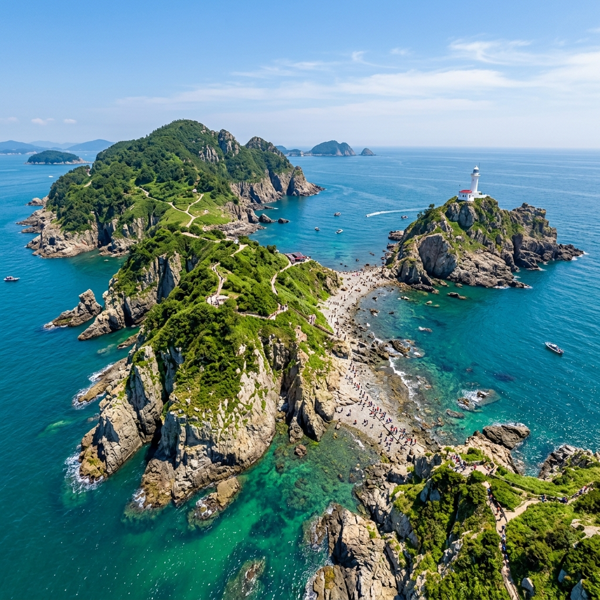
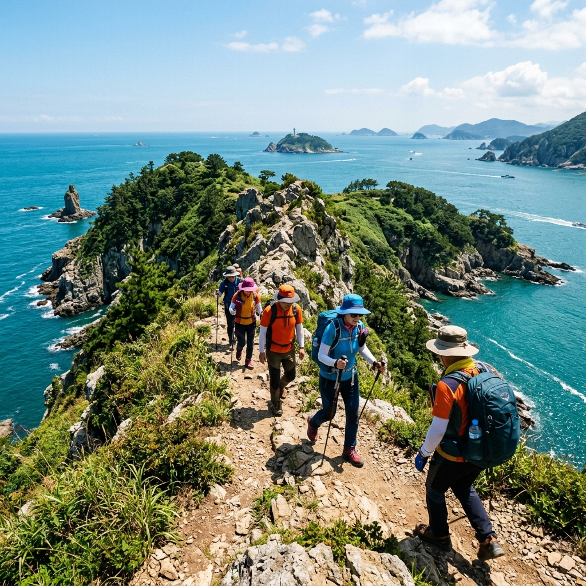
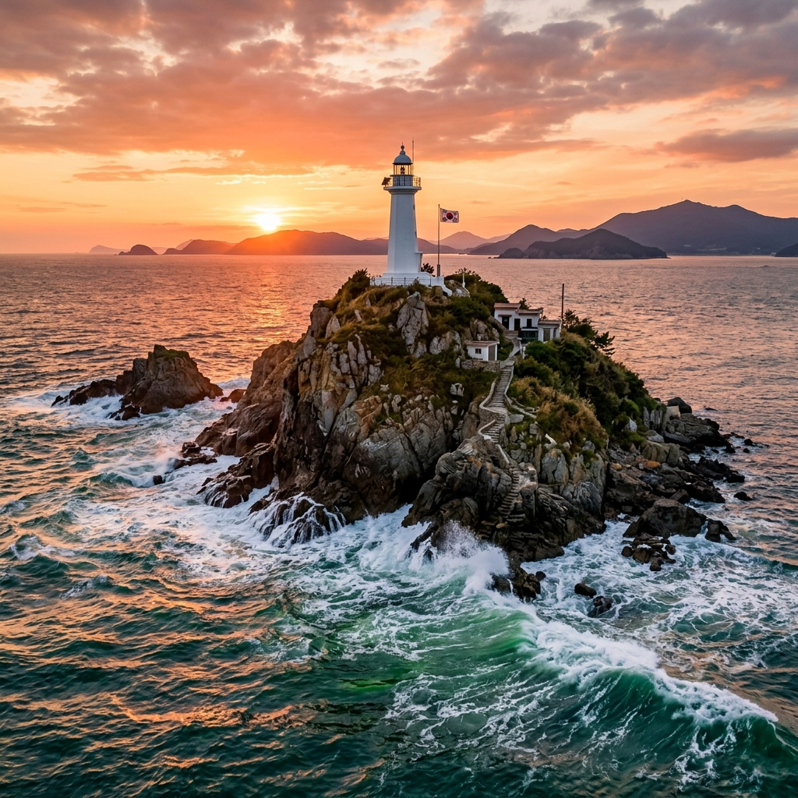

소매물도 등대섬 노두길 직접 건너봤습니다, 통영 배편과 섬 트레킹 코스 정리
✍️ 직접 가보니
통영 여객선터미널에서 이른 배를 타고 소매물도에 내렸습니다. 섬에 도착해 비탈길을 15분쯤 오르면 등대섬과 소매물도 본섬을 잇는 노두길이 나타납니다. 물때가 맞아 노두길이 드러난 날이었는데, 징검다리처럼 이어진 돌길을 건너는 10분이 꽤 짜릿했습니다. 해풍이 세서 모자가 날아갈 뻔 했고, 등대 전망대에서 보이는 한려수도의 파란 바다와 점점이 박힌 섬들은 사진으로 표현하기 어려운 장면이었습니다.
01 소매물도는 어떤 섬인가
소매물도는 통영에서 배로 약 1시간 30분 떨어진 한려해상국립공원 내 작은 섬입니다. 본섬인 소매물도와 노두길로 연결된 등대섬(소등대섬)으로 이루어져 있습니다.
1박 2일 여행자가 많지만 당일 여행도 충분히 가능합니다. 섬 전체가 크지 않아 트레킹 코스를 2~3시간이면 완주할 수 있습니다. 등대섬 정상 조망이 이 섬에서 가장 유명한 포인트입니다.
섬에는 민박·식당이 몇 곳 있으며, 편의점은 없으므로 음식·물은 미리 준비해 가는 것이 좋습니다.

소매물도 노두길과 등대섬 전경 (이미지 제작 예정)
02 배편 시간표와 예약 방법
통영 여객선터미널(한산도·매물도 방면 선착장)에서 소매물도행 배가 출발합니다. 2025년 기준 운항사별 시간표 예시(현장 확인 필수):
- 오전 06:50 출항 (한국해운 계열, 1시간 30분 소요)
- 오전 10:50 출항
- 오후 14:30 출항
복항(소매물도→통영)은 각 편 도착 후 약 30분~1시간 간격으로 운항합니다. 당일 여행이라면 오전 첫 배를 타고 오후 배로 복귀하는 것이 가장 여유 있습니다.
예약: 통영해운 대표번호 055-645-3717 또는 가고싶은섬 홈페이지. 성수기(7~8월)에는 현장 매표 마감이 일찍 될 수 있으므로 사전 예약을 권장합니다.
03 노두길 개방 시간 — 물때 확인이 핵심
등대섬과 본섬 사이 노두길은
만조 시 바닷물에 잠기고 간조 시에만 열립니다. 방문 전 물때표(조석예보) 확인이 필수입니다.
간조 전후 약 2~3시간이 노두길을 안전하게 건널 수 있는 시간입니다. 물이 들어오기 시작하면 빠르게 차오를 수 있으므로 현지 안내판과 섬 주민의 안내를 따르세요.
조석 확인 방법: 국립해양조사원 바다타리 앱 또는 tides.net에서 "통영" 검색 → 방문일 간조 시각 확인. 방문 당일 오전 간조가 10시~14시 사이라면 당일치기 여행과 딱 맞아떨어집니다.
노두길이 잠겨 있는 경우 등대섬 진입 자체가 불가능하므로, 물때를 맞추지 못하면 이 섬 최고의 뷰포인트를 못 보고 올 수도 있습니다.

등대섬 정상에서 내려다본 한려수도 (이미지 제작 예정)
04 섬 트레킹 코스 상세
소매물도 트레킹은 선착장에서 출발해 본섬 능선 → 노두길 → 등대섬 정상 → 복귀 순서로 걷습니다.
주요 구간:
① 선착장 → 본섬 능선 전망대: 약 20분 오르막. 통영 방향 바다와 인근 섬들이 한눈에 보입니다.
② 능선 → 노두길 입구: 약 10분. 내리막 후 노두길이 나타납니다.
③ 노두길 건너기: 약 10분. 조금 미끄러우므로 운동화 필수.
④ 등대섬 능선 오르기: 약 15분. 등대 건물 옆 전망대가 정상 뷰포인트.
⑤ 복귀: 왔던 길로 돌아오거나 섬 일주 코스로 선착장 복귀.
총 소요 시간: 2~2.5시간 (여유 있게 3시간 잡으면 사진 촬영까지 충분).
05 솔직한 장단점
[좋았던 점]
- 노두길 건너는 경험 자체가 독특하고 기억에 남음
- 등대섬 정상의 한려수도 조망 — 사진보다 실물이 훨씬 압도적
- 성수기에도 섬 자체는 혼잡하지 않음 (소규모 섬이라 인파 분산)
[아쉬웠던 점]
- 배편 시간이 제한적이라 체류 계획을 촘촘하게 짜야 함
- 편의 시설 부족: 그늘 부족, 매점 없음 → 음식·물 자급
- 물때 안 맞으면 노두길 못 건넘 → 방문 목적의 절반이 사라짐

소매물도 트레킹 코스 해안 절경 (이미지 제작 예정)
06 7월 여름 방문 시 주의사항
7월 여름 소매물도 방문 시 특히 주의할 사항들을 정리합니다.
자외선 차단: 바다 위 섬이라 자외선 반사가 강합니다. 선크림은 물론 모자·선글라스 필수. 얼굴 뒤에도 귀·귓등에 꼼꼼히 바르세요.
해풍에 의한 체온 하강: 낮에는 덥지만 해풍이 불 때는 갑자기 서늘해집니다. 얇은 바람막이 하나 챙기면 트레킹이 훨씬 편합니다.
식수: 섬에 매점이 없으므로 출발 전 물 1L 이상 준비. 통영 터미널 편의점에서 미리 구매하세요.
뱀 출현 주의: 섬 풀숲 근처에 뱀이 출현할 수 있습니다. 등산화·두꺼운 양말 착용 권장.
07 통영 연계 1박 2일 코스
소매물도 당일 여행이 아닌 1박 2일로 통영을 연계한다면 풍성한 남해안 여행이 됩니다.
추천 코스:
1일차: 통영 케이블카·스카이라인 루지 → 동피랑 벽화마을 → 통영 수산시장 저녁
2일차: 이른 배로 소매물도 출발 → 등대섬 트레킹 → 복귀 후 통영 세병관·이순신공원
통영 시내에 숙소가 많고 가격대도 다양합니다. 성수기 주말은 2주 전 이상 예약 권장합니다.
08 방문 전 체크리스트
□ 방문 당일 조석 예보 확인 (간조 시각 체크)
□ 배편 사전 예약 (성수기 필수, 055-645-3717)
□ 운동화 착용 (노두길·트레킹 필수)
□ 물·도시락·간식 준비
□ 자외선 차단제·모자·선글라스
□ 얇은 바람막이
□ 충전된 스마트폰 + 보조배터리
□ 전신 멀미약 (배 멀미 가능성, 탑승 30분 전 복용)
📝 작성자 메모
노두길이 잠긴다는 사실을 모르고 갔다가 헛걸음한 여행자를 섬에서 실제로 봤습니다. 소매물도 방문에서 가장 중요한 준비는 물때 확인 하나입니다. 바다타리 앱 설치하고 방문 당일 오전 간조 시각에 맞춰 일정 짜면 절대 실망하지 않습니다.
#소매물도
#등대섬노두길
#통영여행
#한려수도
#섬트레킹
#여름섬여행
#남해여행
#국내여행
#경남여행
#노두길